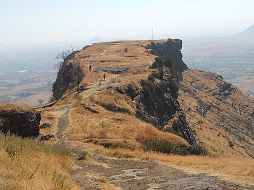
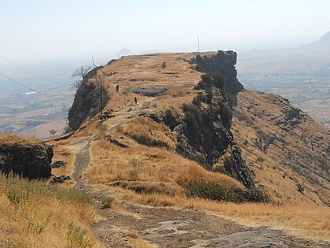

Exploring the Magnificent Forts of Maharashtra

 



One of the most popular trekking destinations near Pune, this fort is also rich with historical significance. This military fortification, built in the 17th century, is the birthplace of the founder of the Maratha Empire, Chhatrapati Shivaji Maharaj.
Formerly known as Murudev, this hill fort is located in Pune District, and used to be the capital of the Maratha Empire for about 26 years under the reign of Chhatrapati Shivaji Maharaj.
Situated in the Konkan region of Maharashtra, Raigad district is majorly known for its historical significance and awe-inspiring beauty. Earlier, the place was named as Coolaba but with the growing popularity of its Raigad fort, it was renamed to Raigad.
Literally meaning ‘Fort of Valour’, this fort is significant due to the Battle of Pratapgad that happened here.
Literally meaning ‘The Lion’s Fort’, Sinhagad Fort rises on top of a high, isolated cliff amidst the beautiful Bhuleswar Range of the Sahyadri Ranges.

Located off the cost of the village of Murad, the Janjira Fort sits on an oval-shaped rock on an island in the Arabian Sea. One of the strongest marine forts in Maharashtra, this fort is accessible to the public by jetties.
Ramshej Fort is located north of Nashik city, and has been historically significant. History has it, that the fort was attacked by Mughals (Aurangzeb’s army), and his commanders threatened the Maratha kingdom saying that they would capture the fort in hours.